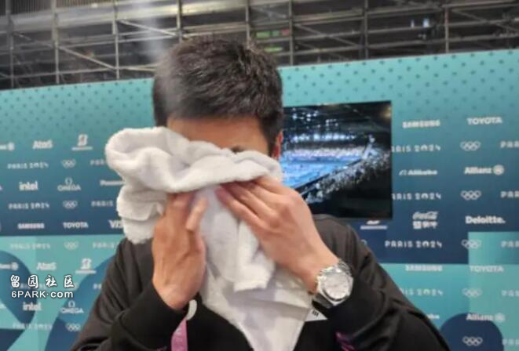
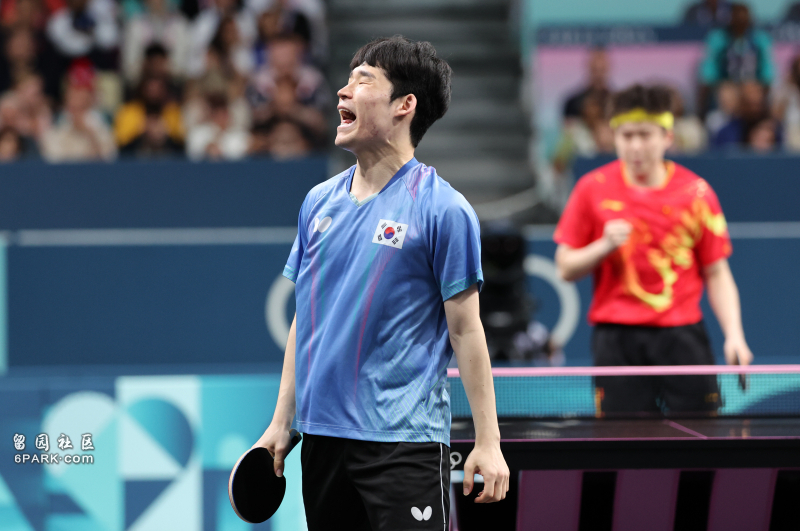

北京时间7日下午，韩国队在巴黎奥运会上乒乓球男团1/4决赛上，最终以0：3的比分遭到中国队碾压，止步八强。赛后，韩国队教练面对镜头时不禁落泪，他称20年了，“每次都输给中国队”。

朱世赫落泪。SBS报道截图
据《朝鲜日报》消息，韩国队教练朱世赫在赛后接受媒体群访，他表示抱歉，“我们让很多运动员和球迷们都失望了，因为我们每次都输给中国队，会让人们觉得我们不行，我对此负有责任”。
朱世赫补充说，“我们在（与中国队的）比赛中已经输了20年了，当面对（强大的中国队）挑战时，队员们本身也会有巨大压力，因此他们此次已经表现得非常好了”。他眼眶红润，开始停下来用毛巾擦眼泪。
韩国男乒运动员张禹珍则表示，朱世赫即是教练，也是他们的前辈、哥哥，是他们遇到过所有教练里最温柔的，“朱教练和我们关系很好，他看到我们输了比赛后不开心，他也会很激动”。

8月7日，在与中国队比赛中输球的张禹珍。韩联社
止住眼泪的朱世赫向韩国队员们表示感谢，他接着就作为“5号种子”选手却遭遇中国队一事表达了绝望。“我和我的前辈们都曾有过输给中国队的经历，但是这一代的选手们没有那样的经历……（相对于其他8强队来说）我们是有实力的，但是抽签结果却过于残酷…”
最后，朱世赫给韩国队打气说，“韩国乒协一直支持我们到最后，还有好多球迷在看着我们，所以我们也不能偷懒。”
Advertisements